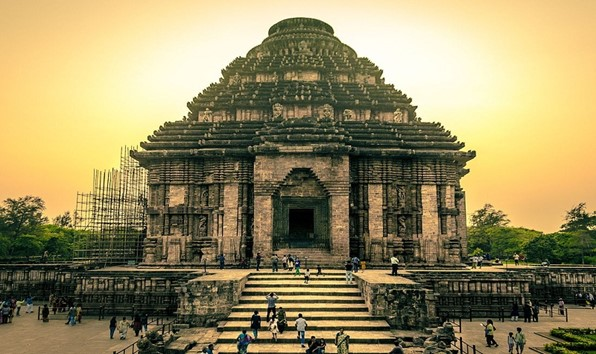
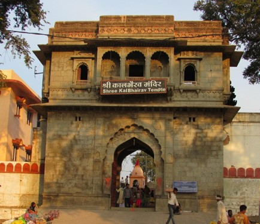

In most parts of India, December is characterized by cool and comfortable weather. This is especially true for North India, where the temperatures can drop significantly, making it a perfect time to visit hill stations and other cold destinations. December is considered the peak tourism season in India, with a large number of tourists visiting the country during this time.
1'-5' December -- Konark Dance Festival
The Konark Dance Festival is an annual dance festival held in the backdrop of the Konark Sun Temple in Odisha, India. The festival showcases classical dance forms of India, including Odissi, Bharatanatyam, Kathak, Kuchipudi, Manipuri, and Mohiniyattam. The festival is usually held in the first week of December and is organized by the Odisha Tourism Development Corporation.The enthralling Konark Dance Festival is held every year, from 1st to 5th December in Open Air Auditorium, Konark.Apart from being the one of the greatest tourist events of the state, the festival serves as a platform for classical dancers in India to showcase India's cultural depth. The leading exponents and dance enthusiasts of almost all main classical dance forms of India-including Odissi, Bharatanatyam, Manipuri, Kathakali, Kathaka, Kuchipudi and Sattriya take part in the five-day classical dance carnival much adding to the appeal of the event.

Konark Sun Temple
The Konark Sun Temple serves as the stunning backdrop for the Konark Dance Festival. The temple is a magnificent example of ancient Indian architecture and is famous for its intricate carvings and sculptures. During the Konark Dance Festival, the temple complex is decorated with lights and other decorations to enhance the overall visual appeal.The dance festival features performances by some of the most renowned classical dancers from across India, who showcase their talent against the stunning backdrop of the temple. The festival attracts a large number of tourists and dance enthusiasts from all over the world who come to witness the performances and experience the unique cultural ambiance.Apart from the dance performances, the festival also includes other cultural activities such as craft exhibitions, food fairs, and cultural seminars, providing visitors with an immersive experience of Indian art and culture.
5' December-- Kal Bhairav Jayanti
Kal Bhairav Jayanti is a festival that celebrates the birth anniversary of Lord Kal Bhairav, who is considered to be one of the fiercest manifestations of Lord Shiva. The festival is primarily celebrated in the northern parts of India, especially in the state of Uttar Pradesh, and falls on the 8th day of the Krishna Paksha (the dark fortnight) of the Hindu month of Margashirsha.During the festival, devotees offer special prayers and perform rituals in honor of Lord Kal Bhairav. They also visit Kal Bhairav temple.

Kal Bhairav Temple
The temple hosts a grand celebration during the festival, with special pujas, processions, and cultural programs.Kal Bhairav Jayanti is indeed celebrated in the Kal Bhairav temple in Ujjain, Madhya Pradesh. The festival is observed on the auspicious day of Margashirsha Krishna Ashtami, which falls in November or December. On this day, devotees offer special prayers to Lord Kal Bhairav, who is considered the fierce form of Lord Shiva. The temple is decorated beautifully, and the atmosphere is filled with the chants of mantras and hymns. It is believed that on this day, Lord Kal Bhairav blesses his devotees with strength, courage, and fearlessness.
7' - 16'December -- Perumthitta Tharavad
A cultural fiesta of traditions, colours, and history, the Perumthottam Tharavad festival is one of the most recognised artistic expressions of vibrant traditions of Kerala. Regarded as the prominent Theyyam festival which is extremely popular in the state, Perumthitta Tharavad celebrations are an extraordinary display of ethnicity of tribal communities thriving in the state. The celebration of this vibrant festival is held at Kattakuzhy in Kasaragod district of Kerala where the entire region springs to joy and life.
The Poovallathil Temple
This is a beautiful temple complex which has been renovated using traditional and modern architectural elements. The Deities have been given their own platforms and sanctums. The legend is that the deity came up the staircase at Kakkodayil along with the family head. Many Theyyam platforms are beautiful combinations of landscape and legends.